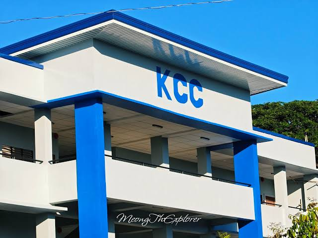

Program Information
Explore Academic Programs
Learn about KCC course offerings and find the academic pathway that matches your goals. Program details should be confirmed with the admissions office.
Request Program DetailsWelcome to KCC
Kabankalan Catholic College nurtures minds and character through quality education, faith-centered formation, and a caring academic community.

About Kabankalan Catholic College
KCC is a community where learners are encouraged to pursue academic excellence, develop character, and serve others with purpose.
Rooted in faith and dedicated to the holistic formation of students, the college provides a welcoming environment for inquiry, growth, and meaningful engagement.
Academic Life
Discover learning opportunities and request the latest program information directly from KCC.
Program Information
Learn about KCC course offerings and find the academic pathway that matches your goals. Program details should be confirmed with the admissions office.
Request Program DetailsStudent Guidance
Receive guidance on academic options, enrollment procedures, and the next steps in beginning or continuing your college journey.
Connect with KCCWhole-Person Formation
KCC supports student growth through faith, service, campus engagement, and opportunities to develop knowledge, confidence, and character.
Explore Campus Life
Campus Community
Campus Life
Campus life at KCC encourages students to build friendships, discover their talents, take part in meaningful activities, and grow as members of the wider community.
Stay Connected


Admissions
Interested in studying at Kabankalan Catholic College? Contact the college for current admissions guidance and requirements.
Contact KCC
Reach out to learn more about Kabankalan Catholic College and current academic offerings.